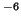

Specifies the required tolerance in convergency of the image charge summation (#). If integer, it is the number of charges to be created (see section 1.4), otherwise it specifies the absolute tolerance.
Options: #
Default: 1.0e

Example: precis 50